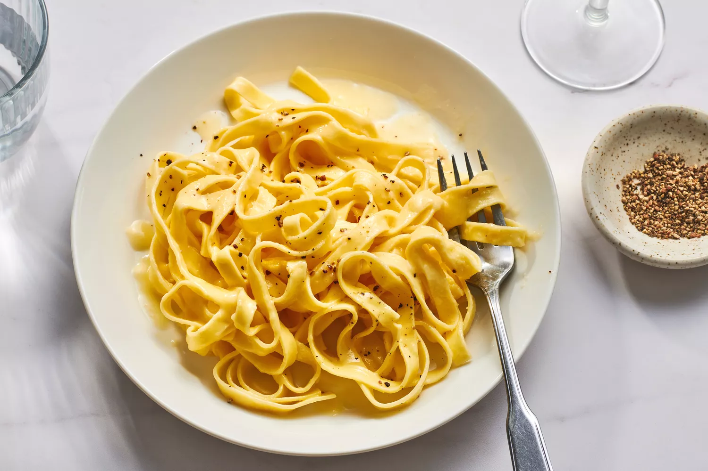

Pasta Alfredo

Fettucine alfredo is one of my favorite recipes, and I have it several times a month.
It's simple, delicious, and doesn't take long to make.
Ingredients
- Kosher salt
- 1 pound fresh fettuccine or other long pasta like pappardelle or linguine
- 4 ounces or 1/2 cup unsalted butter, cut into small pieces
- 1 cup freshly grated Permigiano Reggiano cheese, or Pecorino Romano
- Freshly ground black pepper, for serving
Steps
- Gather the ingredients.
- Bring a large pot of water to a boil. Salt the water liberally and taste it.
It should taste like sea water. Add the pasta and cook according to package directiong
until al dente.
- Reserve 1 cup pasta water before draining the pasta.
- Return 3/4 cup of the reserved pasta water to the same pot over medium-low heat.
Slowly add butter, a few pieces at a time, whisking until butter is melted before
adding more.
Return to Home